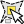
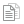

.
General Tools¶
Keyboard shortcuts¶
KADAS provides default keyboard shortcuts for many features. You can find them in section label_menubar. Additionally, the menu option Settings ‣ Configure Shortcuts.. allows you to change the default keyboard shortcuts and to add new keyboard shortcuts to KADAS features.
Figure Shortcuts 1:

Define shortcut options  (Gnome)
(Gnome)
Configuration is very simple. Just select a feature from the list and click on [Change], [Set none] or [Set default]. Once you have finished your configuration, you can save it as an XML file and load it to another KADAS installation.
Context help¶
When you need help on a specific topic, you can access context help via the [Help] button available in most dialogs — please note that third-party plugins can point to dedicated web pages.
Rendering¶
By default, KADAS renders all visible layers whenever the map canvas is refreshed. The events that trigger a refresh of the map canvas include:
- Adding a layer
- Panning or zooming
- Resizing the KADAS window
- Changing the visibility of a layer or layers
KADAS allows you to control the rendering process in a number of ways.
Scale Dependent Rendering¶
Scale-dependent rendering allows you to specify the minimum and maximum scales
at which a layer will be visible. To set scale-dependent rendering, open the
Properties dialog by double-clicking on the layer in the legend. On
the General tab, click on the  Scale
dependent visibility checkbox to activate the feature, then set the minimum and
maximum scale values.
Scale
dependent visibility checkbox to activate the feature, then set the minimum and
maximum scale values.
You can determine the scale values by first zooming to the level you want to use and noting the scale value in the KADAS status bar.
Controlling Map Rendering¶
Map rendering can be controlled in the various ways, as described below.
Suspending Rendering¶
To suspend rendering, click the Render checkbox in the
lower right corner of the status bar. When the Render
checkbox is not checked, KADAS does not redraw the canvas in response to any of
the events described in section Rendering. Examples of when you
might want to suspend rendering include:
- Adding many layers and symbolizing them prior to drawing
- Adding one or more large layers and setting scale dependency before drawing
- Adding one or more large layers and zooming to a specific view before drawing
- Any combination of the above
Checking the Render checkbox enables rendering and
causes an immediate refresh of the map canvas.
Setting Layer Add Option¶
You can set an option to always load new layers without drawing them. This
means the layer will be added to the map, but its visibility checkbox in the
legend will be unchecked by default. To set this option, choose menu option
Settings ‣ Options and click on the Rendering
tab. Uncheck the By default new layers added to the map
should be displayed checkbox. Any layer subsequently added to the map will be off
(invisible) by default.
Stopping Rendering¶
To stop the map drawing, press the ESC key. This will halt the refresh of the map canvas and leave the map partially drawn. It may take a bit of time between pressing ESC and the time the map drawing is halted.
Note
It is currently not possible to stop rendering — this was disabled in the Qt4 port because of User Interface (UI) problems and crashes.
Updating the Map Display During Rendering¶
You can set an option to update the map display as features are drawn. By default, KADAS does not display any features for a layer until the entire layer has been rendered. To update the display as features are read from the datastore, choose menu option Settings ‣ Options and click on the Rendering tab. Set the feature count to an appropriate value to update the display during rendering. Setting a value of 0 disables update during drawing (this is the default). Setting a value too low will result in poor performance, as the map canvas is continually updated during the reading of the features. A suggested value to start with is 500.
Influence Rendering Quality¶
To influence the rendering quality of the map, you have two options. Choose menu option Settings ‣ Options, click on the Rendering tab and select or deselect following checkboxes:
- Make lines appear less jagged at the expense of some
drawing performance
- Fix problems with incorrectly filled polygons
Speed-up rendering¶
There are two settings that allow you to improve rendering speed. Open the KADAS options dialog using Settings ‣ Options, go to the Rendering tab and select or deselect the following checkboxes:
- Enable back buffer. This provides better graphics
performance at the cost of losing the possibility to cancel rendering and
incrementally draw features. If it is unchecked, you can set the
Number of features to draw before updating the display, otherwise
this option is inactive.
- Use render caching where possible to speed up redraws
Measuring¶
Measuring works within projected coordinate systems (e.g., UTM) and unprojected data. If the loaded map is defined with a geographic coordinate system (latitude/longitude), the results from line or area measurements will be incorrect. To fix this, you need to set an appropriate map coordinate system (see section Working with Projections). All measuring modules also use the snapping settings from the digitizing module. This is useful, if you want to measure along lines or areas in vector layers.
To select a measuring tool, click on  and select the tool you want
to use.
and select the tool you want
to use.
Measure length, areas and angles¶
Measure Line: KADAS is able to measure real distances
between given points according to a defined ellipsoid. To configure this,
choose menu option Settings ‣ Options, click on the
Map tools tab and select the appropriate ellipsoid. There, you can
also define a rubberband color and your preferred measurement units (meters or
feet) and angle units (degrees, radians and gon). The tool then allows you to
click points on the map. Each segment length, as well as the total, shows up in
the measure window. To stop measuring, click your right mouse button.
Note that you can interactively change the measurement units in the measurement
dialog. It overrides the Preferred measurement units in the options.
There is an info section in the dialog that shows which CRS settings are being used
during measurement calculations.
Figure Measure 1:

Measure Distance (Gnome)
 Measure Area: Areas can also be measured. In the
measure window, the accumulated area size appears. In addition, the measuring
tool will snap to the currently selected layer, provided that layer has its
snapping tolerance set (see section snapping_tolerance). So, if you want
to measure exactly along a line feature, or around a polygon feature, first set
its snapping tolerance, then select the layer. Now, when using the measuring
tools, each mouse click (within the tolerance setting) will snap to that layer.
Measure Area: Areas can also be measured. In the
measure window, the accumulated area size appears. In addition, the measuring
tool will snap to the currently selected layer, provided that layer has its
snapping tolerance set (see section snapping_tolerance). So, if you want
to measure exactly along a line feature, or around a polygon feature, first set
its snapping tolerance, then select the layer. Now, when using the measuring
tools, each mouse click (within the tolerance setting) will snap to that layer.
Figure Measure 2:

Measure Area (Gnome)
 Measure Angle: You can also measure angles. The
cursor becomes cross-shaped. Click to draw the first segment of the angle you
wish to measure, then move the cursor to draw the desired angle. The measure
is displayed in a pop-up dialog.
Measure Angle: You can also measure angles. The
cursor becomes cross-shaped. Click to draw the first segment of the angle you
wish to measure, then move the cursor to draw the desired angle. The measure
is displayed in a pop-up dialog.
Figure Measure 3:
Measure Angle (Gnome)
Select and deselect features¶
The KADAS toolbar provides several tools to select features in the map canvas.
To select one or several features, just click on  and select your
tool:
and select your
tool:
- Select Single Feature
 Select Features by Rectangle
Select Features by Rectangle-  Select Features by Polygon
 Select Features by Freehand
Select Features by Freehand Select Features by Radius
Select Features by Radius
{kind=link}
To deselect all selected features click on  Deselect
features from all layers.
Deselect
features from all layers.
 Select feature using an expression allow user
to select feature using expression dialog. See Expressions
chapter for some example.
Select feature using an expression allow user
to select feature using expression dialog. See Expressions
chapter for some example.
Users can save features selection into a New Memory Vector Layer or a New Vector Layer using Edit ‣ Paste Feature as ... and choose the mode you want.
Identify features¶
The Identify tool allows you to interact with the map canvas and get information on features
in a pop-up window. To identify features, use View ‣ Identify
features or press Ctrl + Shift + I, or click on the  Identify features icon in the toolbar.
Identify features icon in the toolbar.
If you click on several features, the Identify results dialog will list information about all the selected features. The first item is the number of the layer in the list of results, followed by the layer name. Then, its first child will be the name of a field with its value. The first field is the one selected in Properties ‣ Display. Finally, all information about the feature is displayed.
This window can be customized to display custom fields, but by default it will display three kinds of information:
- Actions: Actions can be added to the identify feature windows. When clicking on the action label, action will be run. By default, only one action is added, to view feature form for editing.
- Derived: This information is calculated or derived from other information. You can find clicked coordinate, X and Y coordinates, area in map units and perimeter in map units for polygons, length in map units for lines and feature ids.
- Data attributes: This is the list of attribute fields from the data.
Figure Identify 1:

Identify feaures dialog (Gnome)
At the top of the window, you have five icons:
- Expand tree
 Collapse tree
Collapse tree- Default behaviour
-  Copy attributes
 Print selected HTML response
Print selected HTML response
{kind=link}
{kind=link}
{kind=link}
At the bottom of the window, you have the Mode and View comboboxes. With the Mode combobox you can define the identify mode: ‘Current layer’, ‘Top down, stop at first’, ‘Top down’ and ‘Layer selection’. The View can be set as ‘Tree’, ‘Table’ and ‘Graph’.
The identify tool allows you to auto open a form. In this mode you can change the feautures attributes.
Other functions can be found in the context menu of the identified item. For example, from the context menu you can:
- View the feature form
- Zoom to feature
- Copy feature: Copy all feature geometry and attributes
- Toggle feature selection: adds identified feature to selection
- Copy attribute value: Copy only the value of the attribute that you click on
- Copy feature attributes: Copy only attributes
- Clear result: Remove results in the window
- Clear highlights: Remove features highlighted on the map
- Highlight all
- Highlight layer
- Activate layer: Choose a layer to be activated
- Layer properties: Open layer properties window
- Expand all
- Collapse all
Decorations¶
The Decorations of KADAS include the Grid, the Copyright Label, the North Arrow and the Scale Bar. They are used to ‘decorate’ the map by adding cartographic elements.
Grid¶
 Grid allows you to add a coordinate grid and coordinate
annotations to the map canvas.
Grid allows you to add a coordinate grid and coordinate
annotations to the map canvas.
Figure Decorations 1:

The Grid Dialog
- Select from menu View ‣ Decorations ‣ Grid. The dialog starts (see figure_decorations_1).
- Activate the Enable grid checkbox and set grid
definitions according to the layers loaded in the map canvas.
- Activate the Draw annotations checkbox and set
annotation definitions according to the layers loaded in the map canvas.
- Click [Apply] to verify that it looks as expected.
- Click [OK] to close the dialog.
Copyright Label¶
 Copyright label adds a copyright label using the text
you prefer to the map.
Copyright label adds a copyright label using the text
you prefer to the map.
Figure Decorations 2:
The Copyright Dialog
- Select from menu View ‣ Decorations ‣ Copyright Label. The dialog starts (see figure_decorations_2).
- Enter the text you want to place on the map. You can use HTML as shown in the example.
- Choose the placement of the label from the Placement
 combo box.
combo box. - Make sure the Enable Copyright Label checkbox is
checked.
- Click [OK].
In the example above, which is the default, KADAS places a copyright symbol followed by the date in the lower right-hand corner of the map canvas.
North Arrow¶
 North Arrow places a simple north arrow on the map canvas.
At present, there is only one style available. You can adjust the angle of the
arrow or let KADAS set the direction automatically. If you choose to let KADAS
determine the direction, it makes its best guess as to how the arrow should be
oriented. For placement of the arrow, you have four options, corresponding to
the four corners of the map canvas.
North Arrow places a simple north arrow on the map canvas.
At present, there is only one style available. You can adjust the angle of the
arrow or let KADAS set the direction automatically. If you choose to let KADAS
determine the direction, it makes its best guess as to how the arrow should be
oriented. For placement of the arrow, you have four options, corresponding to
the four corners of the map canvas.
Figure Decorations 3:
The North Arrow Dialog
Scale Bar¶
 Scale Bar adds a simple scale bar to the map canvas. You
can control the style and placement, as well as the labeling of the bar.
Scale Bar adds a simple scale bar to the map canvas. You
can control the style and placement, as well as the labeling of the bar.
Figure Decorations 4:

The Scale Bar Dialog
KADAS only supports displaying the scale in the same units as your map frame. So if the units of your layers are in meters, you can’t create a scale bar in feet. Likewise, if you are using decimal degrees, you can’t create a scale bar to display distance in meters.
To add a scale bar:
- Select from menu View ‣ Decorations ‣ Scale Bar. The dialog starts (see figure_decorations_4).
- Choose the placement from the Placement combo box.
- Choose the style from the Scale bar style
combo box.
- Select the color for the bar Color of bar
 or use
the default black color.
or use
the default black color. - Set the size of the bar and its label Size of bar
 .
. - Make sure the Enable scale bar checkbox is checked.
- Optionally, check Automatically snap to round number
on resize.
- Click [OK].
Tip
Settings of Decorations
When you save a .qgs project, any changes you have made to Grid, North Arrow, Scale Bar and Copyright will be saved in the project and restored the next time you load the project.
Annotation Tools¶
The  Text Annotation tool in the attribute
toolbar provides the possibility to place formatted text in a balloon on the
KADAS map canvas. Use the Text Annotation tool and click into the
map canvas.
Text Annotation tool in the attribute
toolbar provides the possibility to place formatted text in a balloon on the
KADAS map canvas. Use the Text Annotation tool and click into the
map canvas.
Figure annotation 1:

Annotation text dialog
Double clicking on the item opens a dialog with various options. There is the text editor to enter the formatted text and other item settings. For instance, there is the choice of having the item placed on a map position (displayed by a marker symbol) or to have the item on a screen position (not related to the map). The item can be moved by map position (by dragging the map marker) or by moving only the balloon. The icons are part of the GIS theme, and they are used by default in the other themes, too.
The  Move Annotation tool allows you to move the
annotation on the map canvas.
Move Annotation tool allows you to move the
annotation on the map canvas.
Html annotations¶
The  Html Annotation tools in the attribute
toolbar provides the possibility to place the content of an html file in a
balloon on the KADAS map canvas. Using the Html Annotation tool, click
into the map canvas and add the path to the html file into the dialog.
Html Annotation tools in the attribute
toolbar provides the possibility to place the content of an html file in a
balloon on the KADAS map canvas. Using the Html Annotation tool, click
into the map canvas and add the path to the html file into the dialog.
SVG annotations¶
The  SVG Annotation tool in the attribute toolbar
provides the possibility to place an SVG symbol in a balloon on the KADAS map
canvas. Using the SVG Annotation tool, click into the map canvas and
add the path to the SVG file into the dialog.
SVG Annotation tool in the attribute toolbar
provides the possibility to place an SVG symbol in a balloon on the KADAS map
canvas. Using the SVG Annotation tool, click into the map canvas and
add the path to the SVG file into the dialog.
Form annotations¶
Additionally, you can also create your own annotation forms. The
Form Annotation tool is useful to display
attributes of a vector layer in a customized Qt Designer form (see
figure_custom_annotation). This is similar to the designer forms for the
Identify features tool, but displayed in an annotation item.
Also see this video https://www.youtube.com/watch?v=0pDBuSbQ02o from
Tim Sutton for more information.
Figure annotation 2:
Customized qt designer annotation form
Note
If you press Ctrl+T while an Annotation tool is active (move annotation, text annotation, form annotation), the visibility states of the items are inverted.
Spatial Bookmarks¶
Spatial Bookmarks allow you to “bookmark” a geographic location and return to it later.
Creating a Bookmark¶
To create a bookmark:
- Zoom or pan to the area of interest.
- Select the menu option View ‣ New Bookmark or press Ctrl-B.
- Enter a descriptive name for the bookmark (up to 255 characters).
- Press Enter to add the bookmark or [Delete] to remove the bookmark.
Note that you can have multiple bookmarks with the same name.
Working with Bookmarks¶
To use or manage bookmarks, select the menu option View ‣ Show Bookmarks. The Geospatial Bookmarks dialog allows you to zoom to or delete a bookmark. You cannot edit the bookmark name or coordinates.
Zooming to a Bookmark¶
From the Geospatial Bookmarks dialog, select the desired bookmark by clicking on it, then click [Zoom To]. You can also zoom to a bookmark by double-clicking on it.
Deleting a Bookmark¶
To delete a bookmark from the Geospatial Bookmarks dialog, click on it, then click [Delete]. Confirm your choice by clicking [Yes], or cancel the delete by clicking [No].
Import or export a bookmark¶
To share or transfer your bookmarks between computers you can use the Share pull down menu in the Geospatial Bookmarks dialog.
Nesting Projects¶
If you want to embed content from other project files into your project, you can choose Layer ‣ Embed Layers and Groups.
Embedding layers¶
The following dialog allows you to embed layers from other projects. Here is a small example:
- Press
 to look for another project from the Alaska dataset.
to look for another project from the Alaska dataset. - Select the project file grassland. You can see the content of the project (see figure_embed_dialog).
- Press Ctrl and click on the layers grassland and regions. Press [OK]. The selected layers are embedded in the map legend and the map view now.
Figure Nesting 1:
Select layers and groups to embed
While the embedded layers are editable, you can’t change their properties like style and labeling.
Removing embedded layers¶
Right-click on the embedded layer and choose  Remove.
Remove.